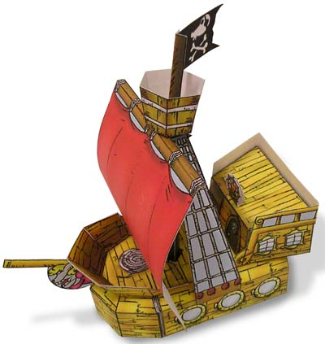
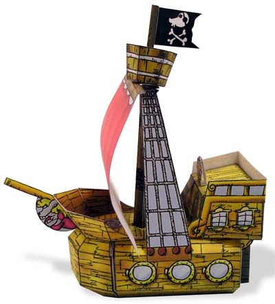
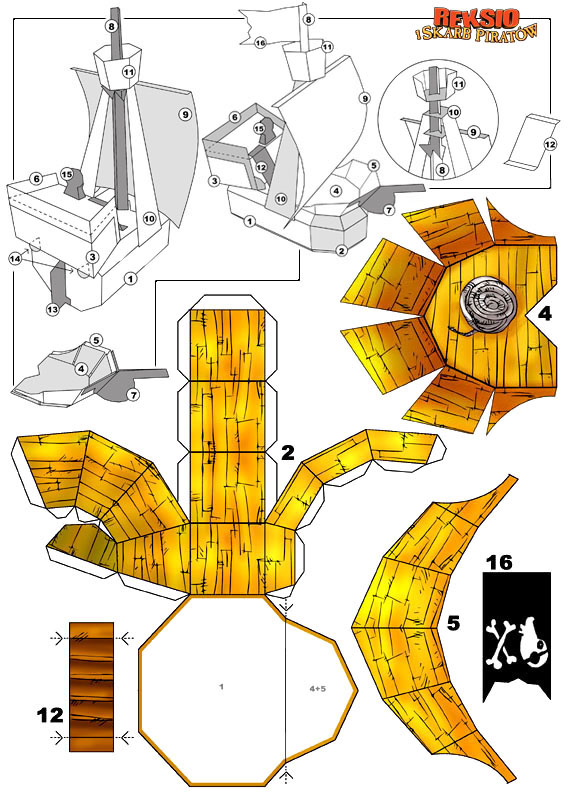
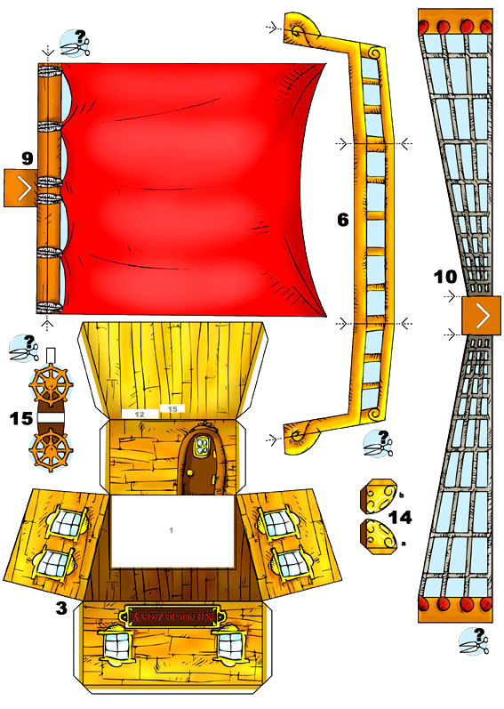
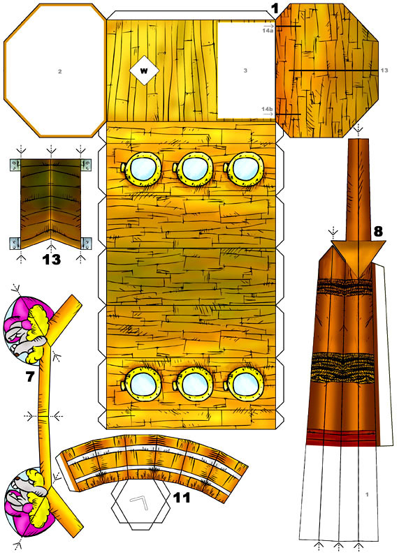

kliknij tutaj, aby ściągnąć spakowane plansze





Witam wszystkie szczury lądowe w naszym kąciku "Zrób to sobie własnoręcznie".
Dzisiaj proponuję wykonać manualnie model statku pirackiego "Niepogryziony".
Do wykonania modelu będziemy potrzebowali:
- trzy arkusze dośc sztywnego papieru ( np. z bloku technicznego ),
- nożyczki,
- dobry klej do papieru,
- mogą się przydać farby,
- linijka i wypisany długopis lub tępy nóż.
Wskazane jest wycinanie tylko tych części, które są nam aktualnie potrzebne,
zapobiegnie to powstaniu bałaganu lub zgubieniu części.
Elementy należy składać przyglądając się rysunkom pomocniczym.
Przy niektórych elementach umieszczone są strzałki pokazujące linię gięcia.
Po liniach, wzdłóż których bedziemy zginać papier, dobrze jest przeciągnąć przy linijce wypisanym długopisem lub tępym nożem. Powstaną lekkie zagłębienia w papierze i znakomicie ułatwi to gięcie. Warto zrobić próbę na niepotrzebnym kawałku papieru.
W częściach (6,9,10,15), możemy dla upiększenia modelu wyciąć pola wypełnione kolorem jasnoniebieskim, ale nie jest to konieczne :-)
Można także pomalować farbami na odpowiedni kolor drugą stronę elementów (6,9,10,14,16).
To też nie jest konieczne ale żagiel (9) i bandera (16) z niepomalowaną jedną stroną mogą nie być z tego zadowolone :-)
Elementy malujemy przed sklejeniem i czekamy na wyschnięcie.
Budowę rozpoczynamy od wydrukowania arkuszy z częściami modelu.
Następnie łapiemy się za nożyczki i przystępujemy do wycinania elementów.
a) Wycinamy część (1), w pokładzie wycinamy biały kwadrat oznaczony literą (W). Całość sklejamy.
b) Wycinamy i sklejamy część (2).
c) Sklejamy razem części (1) i (2). Mamy już kadłub.
d) Wycinamy i sklejamy część (3), doklejamy do niej ( patrz rysunek pomocniczy ) część (6).
Całość przyklejamy do kadłuba.
e) Nastepnie ( patrz rysunek pomocniczy) sklejamy w jedną całość części (4,5,7) i gotowy dziób
przyklejamy do kadłuba.
f) Teraz czeka nas budowa masztu. Część (8) wycinamy, odpowiednio zaginamy i sklejamy.
g) Wycinamy część (9). Następnie nacinamy w niej białe pole przypominające >.
h) Wycinamy część (10). Nacinamy w niej białe pole przypominające >.
i) Nakładamy części (9) i (10) na maszt (8).
j) Wycinamy część (11).
Następnie nacinamy w niej białe pole przypominające > i sklejamy. Gotowy element nakładamy na maszt.
k) Cały maszt umieszczamy ( patrz rysunek pomocniczy ) w kadłubie.
Ustawiamy maszt prosto a boki części (10) przyklejamy do obu burt statku.
l) Pozostało nam jeszcze tylko kilka drobnych elementów.
Przyklejamy część (12) i części (14 a,b) a następnie ster (13).
m) Teraz sklejamy koło sterowe (15) i przyklejamy je w oznaczonym miejscu.
n) Bandera (16) na maszt!
Statek gotowy!
Życzę dobrych wiatrów i do następnego spotkania.
Wasz Jean Paul Kretien